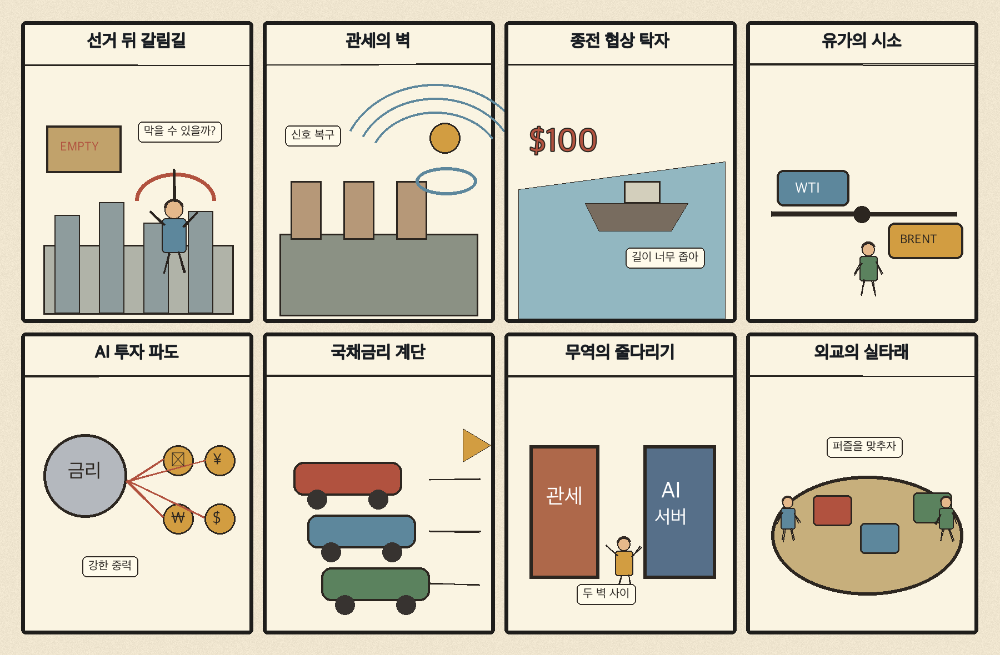
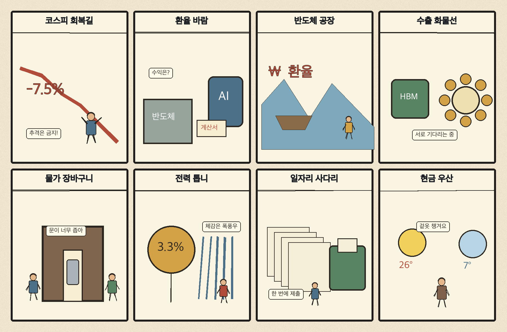

01
앱러빈 · 250.96→271.75달러 · +8.28%
내용요약 시가 대비 +8.28%로 조사군 최상위였습니다.
예상여파 광고기술·AI 소프트웨어로 위험선호가 확산됐지만 급등 뒤 변동성 확대를 경계해야 합니다.
MORNING_BRIEFING_20261105
작성 시각: 2026-11-05 06:35 KST · 직전 미국 정규장과 2026-11-05 KST 당일 공개 기사 기준
11월 4일 뉴욕증시는 다우 +3.03%, S&P 500 +1.58%, 나스닥 +1.44%로 동반 상승했습니다. 미국 중간선거 결과로 정치 불확실성이 완화되며 금융·소비·소프트웨어로 매수세가 확산됐지만 국제유가 급락으로 에너지주는 약했습니다. 전일 KOSPI는 +0.62%, KOSDAQ은 +1.50% 반등했으나 장중 낙폭이 컸던 만큼 오늘도 외국인 수급과 환율을 우선 확인해야 합니다.
| 지수 | 종가 | 등락률 | 한국 증시 시사점 |
|---|---|---|---|
| 다우존스 | 53,356.12 | +3.03% | 경기민감주 심리 강화 |
| S&P 500 | 7,688.62 | +1.58% | 성장주 심리 보완 |
| 나스닥 종합 | 25,736.51 | +1.44% | 성장주 심리 보완 |
중간선거 불확실성 완화로 경기민감주까지 매수세가 넓어졌습니다.
전일 5,683.80으로 반등했지만 시가 대비로는 하락했습니다.
종전 기대가 수입물가에는 우호적이나 에너지주는 부담입니다.
관세는 유지될 가능성이 있어 한국 수출 대응은 계속 필요합니다.
11월 4일 보고서는 수급·컨센서스·30건 이상 유사 조건 표본을 모두 확보하지 못해 공식 추천을 내지 않았습니다. 사후에 종목을 추가하지 않습니다.
| 시장 | 종가 | 등락률 | 기준 |
|---|---|---|---|
| KOSPI | 5,683.80 | +0.62% | 11월 4일 · 시가 대비 -1.77% |
| KOSDAQ | 714.95 | +1.50% | 11월 4일 · 시가 대비 -0.11% |
| 다우존스 | 53,356.12 | +3.03% | 미국 11월 4일 정규장 |
| S&P 500 | 7,688.62 | +1.58% | 미국 11월 4일 정규장 |
| 나스닥 종합 | 25,736.51 | +1.44% | 미국 11월 4일 정규장 |
앱러빈 +8.28%, 쇼피파이 +6.70%로 조사군 상위였습니다.
코인베이스 +6.69%, 마이크로스트래티지 +4.35%였습니다.
유나이티드헬스 +3.22%, 홈디포 +2.73%였습니다.
다이아몬드백 -3.94%, 마이크론 -3.37%, ARM -5.04%였습니다.
내용요약 시가 대비 +8.28%로 조사군 최상위였습니다.
예상여파 광고기술·AI 소프트웨어로 위험선호가 확산됐지만 급등 뒤 변동성 확대를 경계해야 합니다.
내용요약 시가 대비 +6.70%로 강세였습니다.
예상여파 정치 불확실성 완화에 성장주와 전자상거래 소프트웨어 매수가 확대됐습니다.
내용요약 시가 대비 +6.69%로 상승했습니다.
예상여파 디지털자산 관련주의 높은 베타가 위험선호 회복을 반영했습니다.
내용요약 시가 대비 -5.79%로 조사군 하위였습니다.
예상여파 지수 상승에도 AI 서버 종목별 차별화와 실적 민감도가 컸습니다.
내용요약 시가 대비 -3.94%로 하락했습니다.
예상여파 국제유가 급락이 미국 에너지 생산주의 수익성 우려로 이어졌습니다.
다우 +3.03%, S&P 500 +1.58%의 강한 반등은 국내 위험선호에 우호적이고 유가 급락은 운송·화학·소비의 비용 부담을 낮출 수 있습니다. 반면 엔비디아·마이크론·ARM 약세는 국내 반도체의 지수 동조화를 제한할 수 있습니다. 전일 KOSPI가 종가 기준 +0.62%였지만 시가 대비 -1.77%였던 만큼 외국인 현·선물 수급, 원·달러 환율, 장 초반 갭 상승의 유지력을 확인해야 합니다.
오늘은 추천 없음 — 현금 관망
전일까지의 외국인·기관 수급, 컨센서스 변화와 30건 이상 유사 조건 표본을 함께 확보해 종합점수 75점·상승확률 60%·예상 손익비 1.5를 모두 검증한 종목이 없습니다. 미국 지수 급등과 국내 장중 변동성 확대가 동시에 나타나 추격 위험도 큽니다.
관심 연결종목 금융·소비·SMR·반도체 공급망은 관찰 대상일 뿐 매수 추천이 아닙니다. 장전 급등과 장 초반 갭 상승 종목은 추격매수를 금지합니다.
미국 급등이 국내 대형주 순매수로 이어지는지 봅니다.
미국 메모리·ARM 약세와 국내 HBM주의 반응을 점검합니다.
정유·에너지 약세와 항공·운송 비용 개선 기대를 나눠 봅니다.
전일 롤러코스터 장세 뒤 시가 지지 여부를 확인합니다.
핵심 요약: 생성형 AI는 검색 시장과 기업공개로 확장되는 반면 인프라 비용과 규제 검증이 중요해졌습니다. 데이터센터 전력 수요는 SMR 제작과 연결되고, 기업 현장에서는 범용 모델보다 버티컬 AI가 실무 도입을 넓히고 있습니다.
내용요약 앤트로픽이 초대형 기업공개를 준비하는 가운데 막대한 인프라 투자와 규제 조사가 사업성의 시험대로 떠올랐다는 당일 기사입니다.
예상여파 생성형 AI 기업의 자본조달 기대는 커지지만 연산비·규제·수익화 검증이 기업가치 변동성을 키울 수 있습니다.
내용요약 챗GPT 이용량이 구글 검색의 20%에 근접했다는 분석을 바탕으로 검색 시장의 변화 가능성을 짚은 기사입니다.
예상여파 대화형 검색 확산은 광고·콘텐츠 유통과 검색 최적화 전략을 바꾸고 플랫폼 경쟁을 심화할 수 있습니다.
내용요약 미국 중간선거 결과가 데이터센터 투자와 한국 반도체 공급망에 미칠 영향을 점검한 당일 보도입니다.
예상여파 의회 구도 변화로 보조금·전력·수출통제 정책의 속도가 달라지면 국내 반도체 투자 가시성도 흔들릴 수 있습니다.
내용요약 두산에너빌리티가 뉴스케일파워의 소형모듈원전 핵심기기 본제작에 착수했다는 기사입니다.
예상여파 데이터센터 전력 수요와 맞물린 SMR 상용화가 진전되면 원전 주기기 공급망의 장기 수주 기반이 넓어질 수 있습니다.
내용요약 매출 분석과 감사조서 작성처럼 산업별 실무에 특화된 버티컬 AI 도입 사례를 다룬 당일 기사입니다.
예상여파 범용 챗봇보다 업무 데이터와 책임 체계를 갖춘 특화형 AI가 기업 도입과 생산성 개선을 주도할 가능성이 있습니다.
핵심 요약: 미국 중간선거로 의회 권력이 재편되며 시장은 정치 불확실성 완화를 반영했습니다. 다만 관세 기조는 이어질 가능성이 높고, 종전 기대에 유가는 급락했으며 유럽의 우크라이나 지원 요구와 일본 증시 충격이 동시에 나타났습니다.
내용요약 미국 민주당이 중간선거에서 상·하원을 동시에 탈환했다는 당일 보도입니다.
예상여파 여소야대 재편은 행정부 견제를 강화하고 관세·재정·외교 정책의 불확실성을 새로운 형태로 키울 수 있습니다.
내용요약 코트라가 중간선거 뒤에도 미국의 관세정책 기조가 유지될 가능성이 높다고 전망한 기사입니다.
예상여파 한국 수출기업은 의회 구도 변화와 별개로 현지 생산·원산지·품목별 관세 대응을 이어가야 합니다.
내용요약 민주당의 의회 장악과 미·이란 종전 기대 속 국제유가가 8%대 급락했다는 보도입니다.
예상여파 에너지 수입국에는 물가 완화 요인이지만 정유·에너지 기업 실적과 산유국 정책에는 하방 압력으로 작용할 수 있습니다.
내용요약 유럽연합이 새 미국 의회에 우크라이나 지원과 대러시아 압박 강화를 촉구했다는 기사입니다.
예상여파 미국 의회의 지원 기조는 유럽 안보비용과 우크라이나 전쟁의 협상 조건을 좌우할 핵심 변수입니다.
내용요약 미국 중간선거 결과의 파장으로 일본 닛케이 지수가 큰 폭으로 하락했다는 당일 보도입니다.
예상여파 미국 정책 재편과 엔화·수출주 민감도가 아시아 증시 전반의 변동성을 높일 수 있습니다.

핵심 요약: 한국 성장률 전망은 높아졌지만 반도체 공급망과 전기차 점유율 경쟁, 청년 일자리 예산의 성과 검증이 과제로 남았습니다. 오늘은 전국적인 비와 이후 기온 하락에도 대비해야 합니다.
내용요약 미·중 반도체 경쟁의 회색지대에서 한국이 취할 공급망·기술 전략을 제안한 당일 칼럼입니다.
예상여파 대중 사업과 미국 규제 준수를 함께 관리하는 고객·장비·기술별 세분화 전략이 중요해질 수 있습니다.
내용요약 검증이 충분하지 않은 사회연대경제 조직의 청년 일자리 예산 150억원 편성을 둘러싼 논란을 다룬 기사입니다.
예상여파 고용사업은 집행 규모보다 지속고용률과 성과 평가, 부실 사업자 선별이 정책 신뢰를 좌우합니다.
내용요약 해외 투자은행 8곳의 한국 성장률 전망 평균이 3.7%로 높아졌다는 당일 보도입니다.
예상여파 수출과 반도체 호조가 성장 기대를 받치지만 내수 회복과 정책 지속성이 전망의 실현 여부를 결정합니다.
내용요약 세계 전기차 시장 확대에도 한국 기업의 점유 몫이 줄고 중국 업체가 약진했다는 기사입니다.
예상여파 가격·배터리 공급망·현지 생산 경쟁력이 약해지면 수출 증가가 시장점유율 개선으로 이어지지 않을 수 있습니다.
내용요약 전국이 흐리고 대부분 지역에 비가 온 뒤 오후부터 그칠 것이라는 당일 기상 보도입니다.
예상여파 출근길 빗길 안전과 제주 강풍에 대비하고 비가 그친 뒤 기온 하락에 유의해야 합니다.
